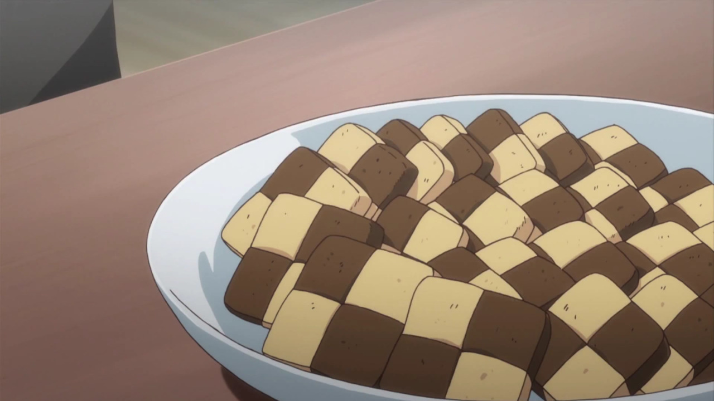

Checkerboard Cookies

Description
Square cookies made of chocolate and vanilla dough in an alternating pattern!
So cute!
Ingredients
- Sugar
- Butter
- Flour
- Cocoa powder
- Baking powder
- Salt
- Eggs
- Vanilla extract
Steps
- Cream together sugar and softened butter
- Add eggs
- Add vanilla extract
- Add baking powder, salt, and flour
- Mix or knead until a shaggy dough forms
- Separate dough into two equal halves
- Roll one half into a log and shape into long rectangle
- Wrap the rectangle in plastic wrap and place in the fridge to chill (This will be your vanilla dough!)
- With remaining half of dough, add cocoa powder
- Mix or knead until color is even throughout
- Repeat log to rectangle shaping process and place in fridge to chill (You guessed it! The chocolate dough!)
- After both doughs have chilled for ~2hrs, remove them from the fridge and cut into four strips each
- The easiest way for me to do it is cut in half the long way and then cut those halves in half again
- You're aiming for long square shaped strips
- Reassemble the cookie logs by stacking the doughs in an alternanting pattern
- Press franken logs together for better adhesion, re-wrap in plastic wrap and chill in the fridge for ~1hr
- When ready to bake simply remove them from the fridge, slice into cookie sized pieces and bake!
Back Home